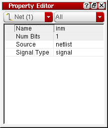

Editing Net Attributes and Properties
You can create and edit the attributes and properties on existing nets using the Property Editor assistant.
- In the Navigator assistant, select the net whose properties you want to edit.
-
From the layout window menu bar, choose Windows – Assistants – Property Editor.
The Property Editor assistant is displayed.
 - To change the signal type for a net:
-
To change the net assignment for a selected object, click in the Net Name field and type in the new net name for the object.
When the selected object is a route element (i.e., a via or a pathSeg) the Net Name field is relabeled Route Net Name. This indicates that changing the net name for that object also changes the net name for the entire route. - To delete a net assignment, remove the name of the net from the Net Name field.
- To add a new property for a selected net;
Related Topics
Return to top